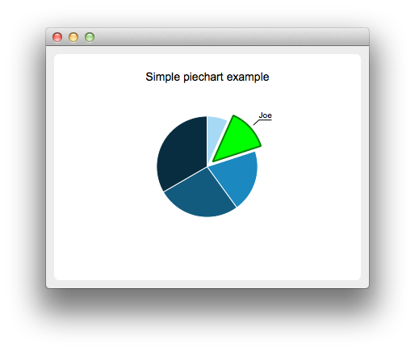
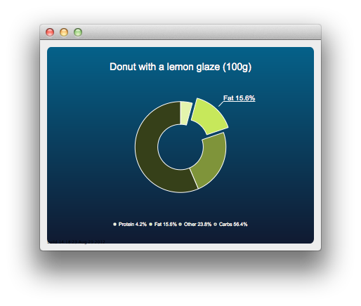

QPieSeries Class
The QPieSeries class presents data in pie charts. More...
| Header: | #include <QPieSeries> |
| Instantiated By: | PieSeries |
| Inherits: | QAbstractSeries |
Properties
|
|
Public Functions
| QPieSeries(QObject *parent = nullptr) | |
| virtual | ~QPieSeries() |
| bool | append(QPieSlice *slice) |
| bool | append(const QList<QPieSlice *> &slices) |
| QPieSlice * | append(const QString &label, qreal value) |
| void | clear() |
| int | count() const |
| qreal | holeSize() const |
| qreal | horizontalPosition() const |
| bool | insert(int index, QPieSlice *slice) |
| bool | isEmpty() const |
| qreal | pieEndAngle() const |
| qreal | pieSize() const |
| qreal | pieStartAngle() const |
| bool | remove(QPieSlice *slice) |
| void | setHoleSize(qreal holeSize) |
| void | setHorizontalPosition(qreal relativePosition) |
| void | setLabelsPosition(QPieSlice::LabelPosition position) |
| void | setLabelsVisible(bool visible = true) |
| void | setPieEndAngle(qreal angle) |
| void | setPieSize(qreal relativeSize) |
| void | setPieStartAngle(qreal startAngle) |
| void | setVerticalPosition(qreal relativePosition) |
| QList<QPieSlice *> | slices() const |
| qreal | sum() const |
| bool | take(QPieSlice *slice) |
| qreal | verticalPosition() const |
| QPieSeries & | operator<<(QPieSlice *slice) |
Reimplemented Public Functions
| virtual QAbstractSeries::SeriesType | type() const override |
Signals
| void | added(const QList<QPieSlice *> &slices) |
| void | clicked(QPieSlice *slice) |
| void | countChanged() |
| void | doubleClicked(QPieSlice *slice) |
| void | hovered(QPieSlice *slice, bool state) |
| void | pressed(QPieSlice *slice) |
| void | released(QPieSlice *slice) |
| void | removed(const QList<QPieSlice *> &slices) |
| void | sumChanged() |
Detailed Description
A pie series consists of slices that are defined as QPieSlice objects. The slices can have any values as the QPieSeries object calculates the percentage of a slice compared with the sum of all slices in the series to determine the actual size of the slice in the chart.
Pie size and position on the chart are controlled by using relative values that range from 0.0 to 1.0. These relate to the actual chart rectangle.
By default, the pie is defined as a full pie. A partial pie can be created by setting a starting angle and angle span for the series. A full pie is 360 degrees, where 0 is at 12 a'clock.
See the Charts with Widgets Gallery to learn how to use QPieSeries.


See also QPieSlice and QChart.
Property Documentation
[read-only] count : const int
This property holds the number of slices in the series.
Access functions:
| int | count() const |
Notifier signal:
| void | countChanged() |
endAngle : qreal
This property holds the ending angle of the pie.
A full pie is 360 degrees, where 0 degrees is at 12 a'clock.
The default value is 360.
Access functions:
| qreal | pieEndAngle() const |
| void | setPieEndAngle(qreal angle) |
holeSize : qreal
This property holds the donut hole size.
The value is relative to the chart rectangle, so that:
- 0.0 is the minimum size (full pie drawn without a hole).
- 1.0 is the maximum size that can fit the chart (the donut has no width).
When setting this property, the size property is adjusted if necessary, to ensure that the hole size is not greater than the pie size.
The default value is 0.0.
Access functions:
| qreal | holeSize() const |
| void | setHoleSize(qreal holeSize) |
horizontalPosition : qreal
This property holds the horizontal position of the pie.
The value is relative to the chart rectangle, so that:
- 0.0 is the absolute left.
- 1.0 is the absolute right.
The default value is 0.5 (center).
Access functions:
| qreal | horizontalPosition() const |
| void | setHorizontalPosition(qreal relativePosition) |
See also verticalPosition.
size : qreal
This property holds the pie size.
The value is relative to the chart rectangle, so that:
- 0.0 is the minimum size (pie not drawn).
- 1.0 is the maximum size that can fit the chart.
When setting this property, the holeSize property is adjusted if necessary, to ensure that the hole size is not greater than the pie size.
The default value is 0.7.
Access functions:
| qreal | pieSize() const |
| void | setPieSize(qreal relativeSize) |
startAngle : qreal
This property holds the starting angle of the pie.
A full pie is 360 degrees, where 0 degrees is at 12 a'clock.
The default value is 0.
Access functions:
| qreal | pieStartAngle() const |
| void | setPieStartAngle(qreal startAngle) |
[read-only] sum : const qreal
This property holds the sum of all slices.
The series keeps track of the sum of all the slices it holds.
Access functions:
| qreal | sum() const |
Notifier signal:
| void | sumChanged() |
verticalPosition : qreal
This property holds the vertical position of the pie.
The value is relative to the chart rectangle, so that:
- 0.0 is the absolute top.
- 1.0 is the absolute bottom.
The default value is 0.5 (center).
Access functions:
| qreal | verticalPosition() const |
| void | setVerticalPosition(qreal relativePosition) |
See also horizontalPosition.
Member Function Documentation
[explicit] QPieSeries::QPieSeries(QObject *parent = nullptr)
Constructs a series object that is a child of parent.
[virtual noexcept] QPieSeries::~QPieSeries()
Removes the pie series and its slices.
[signal] void QPieSeries::added(const QList<QPieSlice *> &slices)
This signal is emitted when the slices specified by slices are added to the series.
See also append() and insert().
bool QPieSeries::append(QPieSlice *slice)
Appends the slice specified by slice to the series. Slice ownership is passed to the series.
Returns true if appending succeeds.
bool QPieSeries::append(const QList<QPieSlice *> &slices)
Appends the array of slices specified by slices to the series. Slice ownership is passed to the series.
Returns true if appending succeeds.
QPieSlice *QPieSeries::append(const QString &label, qreal value)
Appends a single slice with the specified value and label to the series. Slice ownership is passed to the series. Returns null if value is NaN, Inf, or -Inf and adds nothing to the series.
void QPieSeries::clear()
Clears all slices from the series.
[signal] void QPieSeries::clicked(QPieSlice *slice)
This signal is emitted when the slice specified by slice is clicked.
See also QPieSlice::clicked().
int QPieSeries::count() const
Returns the number of the slices in this series.
Note: Getter function for property count.
[signal] void QPieSeries::countChanged()
This signal is emitted when the slice count changes.
Note: Notifier signal for property count.
See also count.
[signal] void QPieSeries::doubleClicked(QPieSlice *slice)
This signal is emitted when the slice specified by slice is double-clicked.
See also QPieSlice::doubleClicked().
[signal] void QPieSeries::hovered(QPieSlice *slice, bool state)
This signal is emitted when a mouse is hovered over the slice specified by slice. When the mouse moves over the slice, state turns true, and when the mouse moves away again, it turns false.
See also QPieSlice::hovered().
bool QPieSeries::insert(int index, QPieSlice *slice)
Inserts the slice specified by slice to the series before the slice at the position specified by index. Slice ownership is passed to the series.
Returns true if inserting succeeds.
bool QPieSeries::isEmpty() const
Returns true if the series is empty.
qreal QPieSeries::pieEndAngle() const
Returns the end angle of the pie.
A full pie is 360 degrees, where 0 degrees is at 12 a'clock.
Note: Getter function for property endAngle.
See also setPieEndAngle(), pieStartAngle(), and setPieStartAngle().
[signal] void QPieSeries::pressed(QPieSlice *slice)
This signal is emitted when the user clicks the slice specified by slice and holds down the mouse button.
See also QPieSlice::pressed().
[signal] void QPieSeries::released(QPieSlice *slice)
This signal is emitted when the user releases the mouse press on the slice specified by slice.
See also QPieSlice::released().
bool QPieSeries::remove(QPieSlice *slice)
Removes a single slice, specified by slice, from the series and deletes it permanently.
The pointer cannot be referenced after this call.
Returns true if the removal succeeds.
[signal] void QPieSeries::removed(const QList<QPieSlice *> &slices)
This signal is emitted when the slices specified by slices are removed from the series.
See also remove().
void QPieSeries::setLabelsPosition(QPieSlice::LabelPosition position)
Sets the position of all the slice labels to position.
Note: This function affects only the current slices in the series. If a new slice is added, the default label position is QPieSlice::LabelOutside.
See also QPieSlice::labelPosition() and QPieSlice::setLabelPosition().
void QPieSeries::setLabelsVisible(bool visible = true)
Sets the visibility of all slice labels to visible.
Note: This function affects only the current slices in the series. If a new slice is added, the default label visibility is false.
See also QPieSlice::isLabelVisible() and QPieSlice::setLabelVisible().
void QPieSeries::setPieEndAngle(qreal angle)
Sets the end angle of the pie.
A full pie is 360 degrees, where 0 degrees is at 12 a'clock.
angle must be greater than the start angle.
Note: Setter function for property endAngle.
See also pieEndAngle(), pieStartAngle(), and setPieStartAngle().
QList<QPieSlice *> QPieSeries::slices() const
Returns a list of slices that belong to this series.
qreal QPieSeries::sum() const
Returns the sum of all slice values in this series.
Note: Getter function for property sum.
See also QPieSlice::value(), QPieSlice::setValue(), and QPieSlice::percentage().
[signal] void QPieSeries::sumChanged()
This signal is emitted when the sum of all slices changes.
Note: Notifier signal for property sum.
See also sum.
bool QPieSeries::take(QPieSlice *slice)
Takes a single slice, specified by slice, from the series. Does not delete the slice object.
Note: The series remains the slice's parent object. You must set the parent object to take full ownership.
Returns true if the take operation was successful.
[override virtual] QAbstractSeries::SeriesType QPieSeries::type() const
Reimplements an access function for property: QAbstractSeries::type.
Returns the type of the series.
QPieSeries &QPieSeries::operator<<(QPieSlice *slice)
Appends the slice specified by slice to the series and returns a reference to the series. Slice ownership is passed to the series.